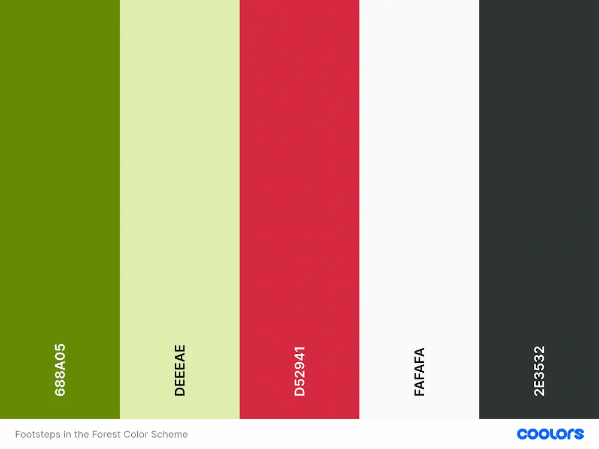
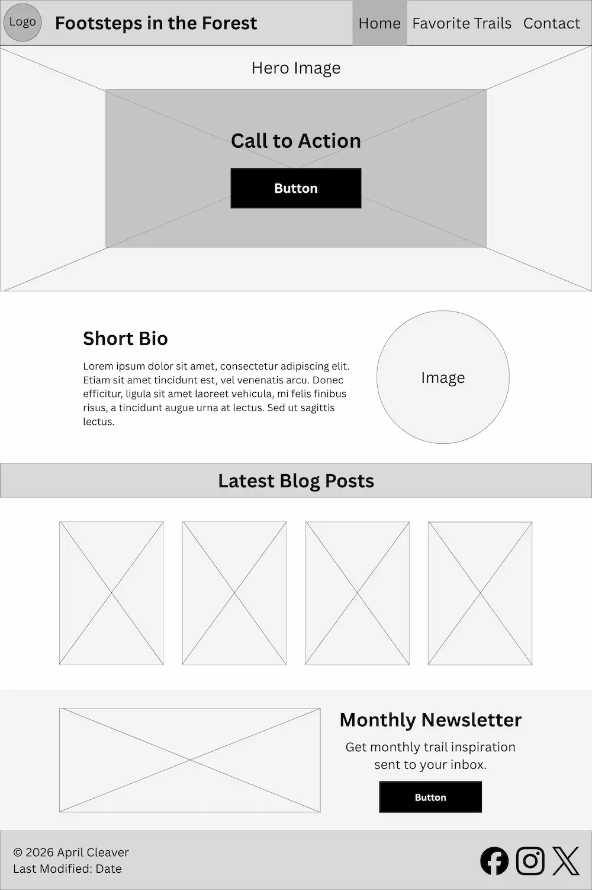
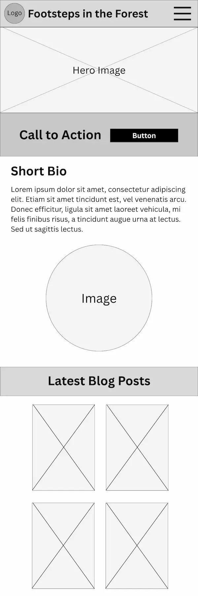

Name
Footsteps in the Forest
Represents a hiking blog featuring trails located primarily in the Pacific Northwest.
Domain possibility: forestfootsteps.com
Purpose
Footsteps in the Forest is a hobby blog/personal website where the author shares favorite Pacific Northwest trails and hiking tips. The site would include a home page, favorite trails page with info about various trails or hiking experiences (similar to a blog listing page), and a contact page.
Scenarios
- What are some little-kid friendly trails in the Pacific Northwest?
- Can I contact the blogger to ask questions about a specific trail they've hiked?
- What trails include waterfalls?
Color Scheme

Primary Color: #688A05
Lighter Primary Color: #DEEEAE
Accent Color: #D52941
Background Color: #FAFAFA
Typeface Color: #2E3532
Typography
Body Font: Outfit (font weight 400)
Heading Font: Libre Baskerville (font weight 700)
Wireframe
Desktop View

Mobile View
Mobile View Continued...
